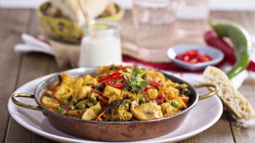

Pato Pekinés
Carne de pato rostizado y cocinado con salsas condimentadas orientales.
Sopa Wonton
Pasta rellena de carne de cerdo con aceite de cacahuate, salsa de soya, sal, jengibre rallado, ralladura de limón y cebolla cambray finamente picada, dentro de un caldo de pollo con cebolla, zanahoria, apio y ajo.

Mapo doufu
Es una combinación de tofu en salsa picante de guindilla y
judía, normalmente clara, aceitosa
y roja brillante, a menudo
cubierto con carn
e picada, usualmente cerdo o ternera.
Rollitos de primavera
Rollo elaborado de arina o arroz, relleno de diferentes verduras picadas al estilo juliana y algo de carne picada revuelto todo ello.
Zongzi
Elaborado de arroz glutinoso cocinado de tal
forma que tenga diferentes rellenos
y enrollado
con hojas de bambú en México podría desirse que son tamales
de masa de arroz con relleno.
Pollo Gong Bao
Pechuga de pollo rebanada, cortada y cocinada
con verduras (morron, zanahoria,
cebolla,
brócoli, etc.) Sazonado con y guisado con salsas orientales.
Jiaozi
Se elaboran rellenos de carne picada o verduras enrollados en una delgada
y
fina masa, que se suele sellar con los dedos como una empanada.
Wanton mee
Elaborada con fideo que es muy popular en Hong Kong, Malasia y Singapur. El plato es servido en una especie de sopa caliente o humedecido en salsa de soja o salsa de ostras, aliñado con verduras (preferiblemente aquellas que poseen hojas verdes), char siew (rodajas de carne de cerdo asado), y junto con el wanton en un cuenco separado.